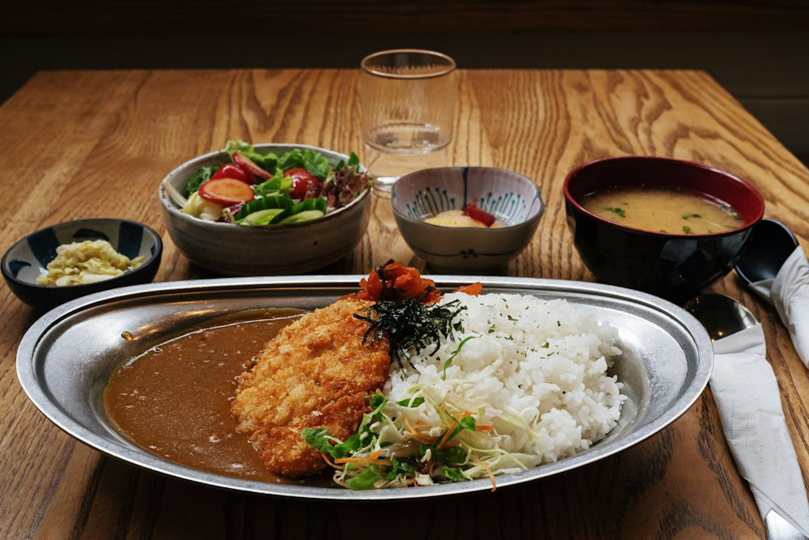

A little spice, to go.
スパイス料理と
ワインの、
カウンターの小さな店。Spice dishes
& wine at a
tiny counter.
立川・高松町。〆にはスパイスカレーを。時を重ねたコーポの一室を、少しずつ“お店”に変えてきました。Takamatsu-cho, Tachikawa. Finish with spice curry — in an old apartment room we slowly turned into a restaurant.
Sun · Lunch
12:00 – 14:30 L.O.spice定食などSpice set meals and more● いま昼の営業中● Lunch is on now
Moon · Dinner
18:00 – 22:00 L.O.スパイス料理とワインSpice dishes & wine● いま夜の営業中● Dinner is on now
menu of the day
- spice定食Spice set meal
- 若鶏の唐揚げKaraage fried chicken
- ルーロー飯Lu rou fan (braised pork rice)
- エビのスリランカ風カレーSri Lankan-style shrimp curry
today
今日の昼と夜。Today, noon and night.
人気は「豚肉と卵のカレープレート」やルーロー飯。辛さの効いたスパイス料理を、ワインと一緒に。Favorites include the pork & egg curry plate and lu rou fan — spicy dishes to pair with wine.

more
月とaniseの、ほかにも。And there's more.
to go
テイクアウトTakeout
日常に、スパイスを。持ち帰りもできます。月替わりのおやつも。Spice for every day — takeout available, plus a monthly sweet.
vin
ワインの試飲会・勉強会Wine tastings
ワインの試飲会＆勉強会も開催しています。We host wine tastings and study sessions.
with pets
ペットフレンドリーPet friendly
9月より、ペットフレンドリーとしてご案内をはじめました。Since September, pets are welcome.
visit
お店への行き方Find us
- 住所Address
- 〒190-0011 東京都立川市高松町3-9-9 コーポ沖田102Corpo Okita 102, 3-9-9 Takamatsu-cho, Tachikawa, Tokyo 190-0011
- 昼Lunch
- 12:00–14:30 (L.O.)
- 夜Dinner
- 18:00–22:00 (L.O.)
- 定休日Closed
- 月曜日Mondays
- TEL
- 070-6425-0506
- tsukitoanise@gmail.com
- @tsukitoanise
- 評価Rating
- ★4.8 （Googleマップ）(Google Maps)